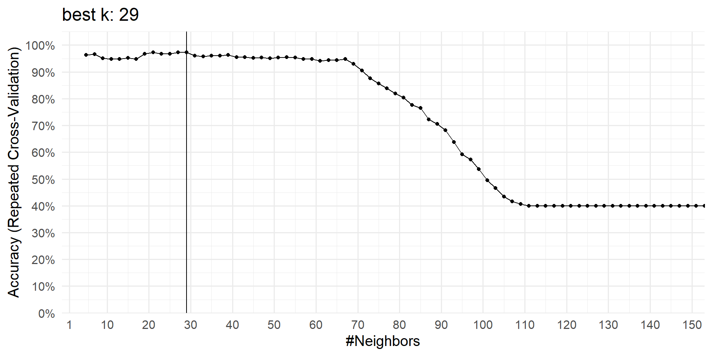
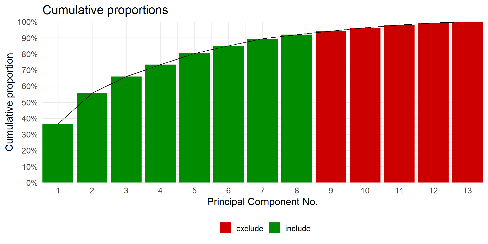

k- Neareast Neighbours
- Classification:
- Medical diagnosis
- Image recognition
- Document classification
- Regression:
- Stock price prediction
- Weather forecasting
- Recommendation Systems:
- Product recommendations
- Movie recommendations
- Anomaly Detection:
- Fraud detection
- Network security
- Pattern Recognition:
- Speech recognition
- Handwriting recognition
- Data Imputation:
- Filling missing values
The idea
example at work
- training data
- new data
raw data plot
clustering: code
cluster plot
cluster: classroom
We need:
two clusters
one new data point
How did you decide to which cluster the data point belongs?
Euclidean distance
the math
- \(n\)-dimensions:
-
\(d(p,q) = \sqrt{(p_1-q_1)^2+(p_2-q_2)^2+\ldots+(p_n-q_n)^2}\)
- \(n=2\)-dimensions:
-
\(d(p,q)= \sqrt{(p_1-q_1)^2+(p_2-q_2)^2}\)
- general:
-
\(d(p,q) = \lVert{p-q}\rVert\)
the application

the data
as kNN measure: k = 3
| idx | feature_01 | feature_02 | cluster | new_data_feature_01 | new_data_feature_02 | d_dist |
|---|---|---|---|---|---|---|
| 1 | 5.0 | 6.0 | circle | 5 | 5 | 1.000000 |
| 2 | 4.0 | 6.0 | circle | 5 | 5 | 1.414214 |
| 3 | 5.5 | 3.5 | triangle | 5 | 5 | 1.581139 |
| 4 | 3.5 | 3.0 | triangle | 5 | 5 | 2.500000 |
| 5 | 5.0 | 2.5 | triangle | 5 | 5 | 2.500000 |
| 6 | 6.0 | 7.5 | circle | 5 | 5 | 2.692582 |
| 7 | 8.5 | 5.0 | circle | 5 | 5 | 3.500000 |
| 8 | 8.5 | 3.5 | circle | 5 | 5 | 3.807887 |
| 9 | 5.0 | 9.0 | circle | 5 | 5 | 4.000000 |
| 10 | 1.0 | 5.5 | triangle | 5 | 5 | 4.031129 |
| 11 | 7.0 | 1.5 | triangle | 5 | 5 | 4.031129 |
| 12 | 1.0 | 4.0 | triangle | 5 | 5 | 4.123106 |
| 13 | 3.0 | 9.0 | circle | 5 | 5 | 4.472136 |
| 14 | 2.5 | 1.0 | triangle | 5 | 5 | 4.716991 |
as kNN measure: k = 5
| idx | feature_01 | feature_02 | cluster | new_data_feature_01 | new_data_feature_02 | d_dist |
|---|---|---|---|---|---|---|
| 1 | 5.0 | 6.0 | circle | 5 | 5 | 1.000000 |
| 2 | 4.0 | 6.0 | circle | 5 | 5 | 1.414214 |
| 3 | 5.5 | 3.5 | triangle | 5 | 5 | 1.581139 |
| 4 | 3.5 | 3.0 | triangle | 5 | 5 | 2.500000 |
| 5 | 5.0 | 2.5 | triangle | 5 | 5 | 2.500000 |
| 6 | 6.0 | 7.5 | circle | 5 | 5 | 2.692582 |
| 7 | 8.5 | 5.0 | circle | 5 | 5 | 3.500000 |
| 8 | 8.5 | 3.5 | circle | 5 | 5 | 3.807887 |
| 9 | 5.0 | 9.0 | circle | 5 | 5 | 4.000000 |
| 10 | 1.0 | 5.5 | triangle | 5 | 5 | 4.031129 |
| 11 | 7.0 | 1.5 | triangle | 5 | 5 | 4.031129 |
| 12 | 1.0 | 4.0 | triangle | 5 | 5 | 4.123106 |
| 13 | 3.0 | 9.0 | circle | 5 | 5 | 4.472136 |
| 14 | 2.5 | 1.0 | triangle | 5 | 5 | 4.716991 |
as kNN measure - in a plot
multi-dimensional clustering or “How many k’s?”
find more info here: (Aeberhard, Coomans, and Vel 1994)
Rows: 178
Columns: 15
$ idx <dbl> 0, 1, 2, 3, 4, 5, 6, 7, 8, 9, 10, 11, 12, 13…
$ Origin <dbl> 1, 1, 1, 1, 1, 1, 1, 1, 1, 1, 1, 1, 1, 1, 1,…
$ Alcohol <dbl> 14.23, 13.20, 13.16, 14.37, 13.24, 14.20, 14…
$ Malic_acid <dbl> 1.71, 1.78, 2.36, 1.95, 2.59, 1.76, 1.87, 2.…
$ Ash <dbl> 2.43, 2.14, 2.67, 2.50, 2.87, 2.45, 2.45, 2.…
$ Alkalinity_of_ash <dbl> 15.6, 11.2, 18.6, 16.8, 21.0, 15.2, 14.6, 17…
$ Magnesium <dbl> 127, 100, 101, 113, 118, 112, 96, 121, 97, 9…
$ Total_phenols <dbl> 2.80, 2.65, 2.80, 3.85, 2.80, 3.27, 2.50, 2.…
$ Flavanoids <dbl> 3.06, 2.76, 3.24, 3.49, 2.69, 3.39, 2.52, 2.…
$ Nonflavonoids_phenols <dbl> 0.28, 0.26, 0.30, 0.24, 0.39, 0.34, 0.30, 0.…
$ Proanthocyanins <dbl> 2.29, 1.28, 2.81, 2.18, 1.82, 1.97, 1.98, 1.…
$ Color_intensity <dbl> 5.64, 4.38, 5.68, 7.80, 4.32, 6.75, 5.25, 5.…
$ Hue <dbl> 1.04, 1.05, 1.03, 0.86, 1.04, 1.05, 1.02, 1.…
$ OD280_OD315_diluted_wines <dbl> 3.92, 3.40, 3.17, 3.45, 2.93, 2.85, 3.58, 3.…
$ Proline <dbl> 1065, 1050, 1185, 1480, 735, 1450, 1290, 129…quick eda
some preprocessing
- same proportions?
1 2 3
0.33 0.40 0.27 NA’s?
idx Origin Alcohol Malic_acid Ash
Min. : 0.00 1:59 Min. :11.03 Min. :0.740 Min. :1.360
1st Qu.: 44.25 2:71 1st Qu.:12.36 1st Qu.:1.603 1st Qu.:2.210
Median : 88.50 3:48 Median :13.05 Median :1.865 Median :2.360
Mean : 88.50 Mean :13.00 Mean :2.336 Mean :2.367
3rd Qu.:132.75 3rd Qu.:13.68 3rd Qu.:3.083 3rd Qu.:2.558
Max. :177.00 Max. :14.83 Max. :5.800 Max. :3.230
Alkalinity_of_ash Magnesium Total_phenols Flavanoids
Min. :10.60 Min. : 70.00 Min. :0.980 Min. :0.340
1st Qu.:17.20 1st Qu.: 88.00 1st Qu.:1.742 1st Qu.:1.205
Median :19.50 Median : 98.00 Median :2.355 Median :2.135
Mean :19.49 Mean : 99.74 Mean :2.295 Mean :2.029
3rd Qu.:21.50 3rd Qu.:107.00 3rd Qu.:2.800 3rd Qu.:2.875
Max. :30.00 Max. :162.00 Max. :3.880 Max. :5.080
Nonflavonoids_phenols Proanthocyanins Color_intensity Hue
Min. :0.1300 Min. :0.410 Min. : 1.280 Min. :0.4800
1st Qu.:0.2700 1st Qu.:1.250 1st Qu.: 3.220 1st Qu.:0.7825
Median :0.3400 Median :1.555 Median : 4.690 Median :0.9650
Mean :0.3619 Mean :1.591 Mean : 5.058 Mean :0.9574
3rd Qu.:0.4375 3rd Qu.:1.950 3rd Qu.: 6.200 3rd Qu.:1.1200
Max. :0.6600 Max. :3.580 Max. :13.000 Max. :1.7100
OD280_OD315_diluted_wines Proline
Min. :1.270 Min. : 278.0
1st Qu.:1.938 1st Qu.: 500.5
Median :2.780 Median : 673.5
Mean :2.612 Mean : 746.9
3rd Qu.:3.170 3rd Qu.: 985.0
Max. :4.000 Max. :1680.0 splitting the data
controlling the training
- What is
repeatedcv?- repeated cross validation
- What is cross validation?
Cross Validation - why?
Cross Validation - how?
Cross Validation - what?
k-Fold Cross-Validation: The dataset is divided into k subsets. The model is trained on \(k - 1\) subsets and tested on the remaining one. This process is repeated \(k\) times.
Leave-One-Out Cross-Validation (LOOCV): A special case of k-fold cross-validation where \(k\) is equal to the number of data points. Each data point is used as a test set exactly once, and the model is trained on all remaining data points.
Stratified k-Fold Cross-Validation: Similar to k-fold but ensures that each fold has a representative proportion of classes, useful in classification problems with imbalanced classes.
Repeated k-Fold Cross-Validation: The k-fold cross-validation process is repeated multiple times with different random splits of the data to ensure more robust performance estimates.
Cross Validation - advantages
Model Evaluation: Provides a more accurate estimate of model performance on unseen data compared to a single train-test split.
Bias-Variance Trade-Off: Helps in tuning model hyperparameters by providing insights into the model’s bias and variance.
Data Utilization: Maximizes the use of the available data for both training and testing, leading to better model performance assessment.
modeling
model_knn_wd2 <- train(origin ~.,
data = train_wd2,
method = "knn",
trControl = trnctrl_wd2,
preProcess = c("center", "scale"),
tuneLength = 75)
model_knn_wd2k-Nearest Neighbors
135 samples
13 predictor
3 classes: '1', '2', '3'
Pre-processing: centered (13), scaled (13)
Resampling: Cross-Validated (10 fold, repeated 3 times)
Summary of sample sizes: 121, 121, 121, 122, 121, 121, ...
Resampling results across tuning parameters:
k Accuracy Kappa
5 0.9698474 0.9545184180
7 0.9621551 0.9427169773
9 0.9572100 0.9353030131
11 0.9502259 0.9245253805
13 0.9632906 0.9441471417
15 0.9633211 0.9446100928
17 0.9702747 0.9548866279
19 0.9726557 0.9584489689
21 0.9754029 0.9627380132
23 0.9779670 0.9665728215
25 0.9825702 0.9734684958
27 0.9750611 0.9621045500
29 0.9704579 0.9551526898
31 0.9726252 0.9584303636
33 0.9686020 0.9524259395
35 0.9706410 0.9554175431
37 0.9636569 0.9448549688
39 0.9636569 0.9448549688
41 0.9585287 0.9371853523
43 0.9587118 0.9374304169
45 0.9557204 0.9326607877
47 0.9563309 0.9333103895
49 0.9561172 0.9329819392
51 0.9537363 0.9293088209
53 0.9533394 0.9288591322
55 0.9456166 0.9167803587
57 0.9437912 0.9141879026
59 0.9511172 0.9255764428
61 0.9463553 0.9182579259
63 0.9439744 0.9144051398
65 0.9341087 0.8989825352
67 0.9242186 0.8838846550
69 0.9016056 0.8487562540
71 0.8820085 0.8173656469
73 0.8762698 0.8085022697
75 0.8449573 0.7583663524
77 0.8397192 0.7492320244
79 0.8445360 0.7570290796
81 0.8246459 0.7242232987
83 0.8076129 0.6972167293
85 0.8050488 0.6923019110
87 0.7612515 0.6198637995
89 0.7244567 0.5594696577
91 0.6919048 0.5072253233
93 0.6480769 0.4321882796
95 0.6089866 0.3667854543
97 0.5716972 0.3034116468
99 0.5222894 0.2182266914
101 0.4995177 0.1794058718
103 0.4705311 0.1273073715
105 0.4477350 0.0887421133
107 0.4151770 0.0306638283
109 0.4054457 0.0143649922
111 0.4005006 0.0044573444
113 0.4005006 0.0031202611
115 0.4005006 0.0003921569
117 0.4005006 0.0000000000
119 0.4005006 0.0000000000
121 0.4005006 0.0000000000
123 0.4005006 0.0000000000
125 0.4005006 0.0000000000
127 0.4005006 0.0000000000
129 0.4005006 0.0000000000
131 0.4005006 0.0000000000
133 0.4005006 0.0000000000
135 0.4005006 0.0000000000
137 0.4005006 0.0000000000
139 0.4005006 0.0000000000
141 0.4005006 0.0000000000
143 0.4005006 0.0000000000
145 0.4005006 0.0000000000
147 0.4005006 0.0000000000
149 0.4005006 0.0000000000
151 0.4005006 0.0000000000
153 0.4005006 0.0000000000
Accuracy was used to select the optimal model using the largest value.
The final value used for the model was k = 25.modeling diagnostics
PREDICTION
All models are wrong,
some are useful.
prediction_knn_wd2 <- predict(model_knn_wd2, newdata = test_wd2)
confusionMatrix(prediction_knn_wd2, reference = test_wd2$origin)Confusion Matrix and Statistics
Reference
Prediction 1 2 3
1 14 1 0
2 0 15 0
3 0 1 12
Overall Statistics
Accuracy : 0.9535
95% CI : (0.8419, 0.9943)
No Information Rate : 0.3953
P-Value [Acc > NIR] : 1.02e-14
Kappa : 0.93
Mcnemar's Test P-Value : NA
Statistics by Class:
Class: 1 Class: 2 Class: 3
Sensitivity 1.0000 0.8824 1.0000
Specificity 0.9655 1.0000 0.9677
Pos Pred Value 0.9333 1.0000 0.9231
Neg Pred Value 1.0000 0.9286 1.0000
Prevalence 0.3256 0.3953 0.2791
Detection Rate 0.3256 0.3488 0.2791
Detection Prevalence 0.3488 0.3488 0.3023
Balanced Accuracy 0.9828 0.9412 0.9839many plots - but how?
- First: define plotting function that takes varnames as input
plt_clust <- function(
dataset,
varname1,
varname2,
train_data){
varset <- dataset |>
select({{varname1}},{{varname2}}) |>
colnames()
ds_plt <- dataset |>
rowid_to_column(
var = "idx"
)
p <- ds_plt |>
ggplot(
aes(
x = {{varname1}},
y = {{varname2}}
)
)+
geom_point(
aes(
shape = pred.origin,
color = pred.origin,
fill = pred.origin
),
size =3)+
geom_text(
aes(
label = idx
)
)+
labs(
title = paste0(varset[1]," vs. ",varset[2])
)+
stat_ellipse(
aes(
color = pred.origin,
fill = pred.origin
),
type = "t",geom = "polygon",alpha = 0.4)+
stat_ellipse(
data = train_data,
aes(
color = origin,
fill = origin
),
linetype = "dashed",
type = "t",
geom = "polygon",
alpha = 0.1)+
scale_fill_brewer(palette = "Set1")+
scale_color_brewer(palette = "Set1")+
theme_classic(base_size = 15)+
theme(
legend.position = "bottom"
)
return(p)
}
# plt_clust(pred_out,alcohol,malic_acid,train_wd2)- Second: compute all possible varname combinations, without predictor, omit duplicates
- Third: map over the rows, create anonymous function
- Fourth: do the plots, first just one, then all
[[1]]
The curse of dimensionality
- Increased Volume:
- Space volume grows exponentially with dimensions.
- Data points become sparse, complicating pattern recognition.
- Distance Measures:
- Distances between data points become similar.
- Distance-based algorithms (e.g., k-nearest neighbors) lose effectiveness.
- Data Sparsity:
- Data becomes sparser in high dimensions.
- Higher risk of overfitting, requiring more data for reliability.
- Computational Complexity:
- Processing high-dimensional data is computationally expensive.
- Algorithm complexity often increases exponentially with dimensions.
- Feature Selection and Extraction:
- Methods like PCA and t-SNE reduce dimensions while retaining key information.
- Visualization:
- Visualizing high-dimensional data is difficult.
- Projections to lower dimensions are necessary for interpretation.
- Overfitting:
- High-dimensional data increases the risk of overfitting.
- Regularization and cross-validation help mitigate this.
Mitigation Strategies
- Dimensionality Reduction: Techniques such as PCA and autoencoders.
- Feature Selection: Choosing the most relevant features.
- Regularization: L1 and L2 regularization to prevent overfitting.
- Domain Knowledge: Using expertise to identify important features.
PCA
knn summary
Pros:
- Non-parametric: Does not assume a fixed form for the mapping function, allowing for flexibility in modeling complex relationships.
- Adaptable: Can easily adapt to new data by simply storing additional instances, making it suitable for dynamic environments.
- Interpretable: Easy to interpret results as the output is based on the majority class among neighbors or average of nearest points.
Cons:
- Memory Intensive: Requires storing the entire training dataset, which can be problematic for very large datasets.
- Feature Scaling: Performance depends heavily on the scale of the features, often necessitating normalization or standardization.
- Imbalanced Data: Struggles with imbalanced datasets where the minority class may be overshadowed by the majority class due to the simple majority voting mechanism.
References

Copyright Prof. Dr. Tim Weber, 2024